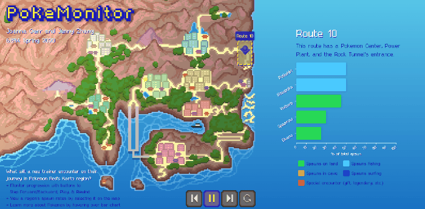
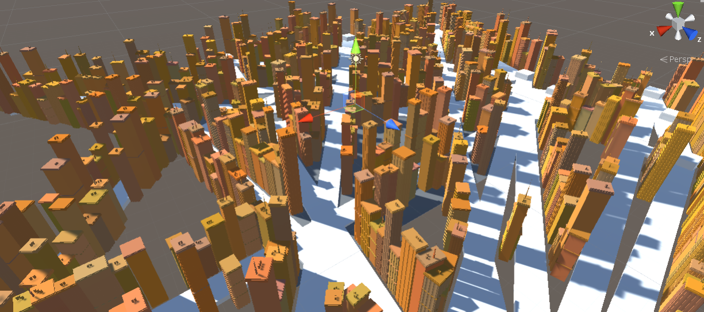

🎨 CATS
...aka, the Computer Artist's Tools Suite! This Python add-on tools menu for Blender allows digital artists to create and control non-photorealistic rendering styles without needing to edit shader graphs directly.
- Created a user-friendly UX/UI making use of existing digital art software conventions
- Procedurally generated shaders, with controls to tune final shader appearance

A few of the D3 visualizations I've worked on in recent years, including:
- PokeMonitor, which shows data about all the Pokemon spawns a trainer will encounter in their journey through the Kanto region
- Fandom Walk, a choice-driven, narrative viz that centers around the experience and reception of writing fanfiction within fandom

This research investigated existing methods of generating cities, compared them against real-world structural and social concerns, and improved upon representations in ways that begin to account for the depth of urban life.
- Maya MEL scripting to procedurally generate buildings
- Developed C# algorithms in Unity to procedurally generate cities bounded by realistic urban constraints
